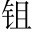

太史公讀秦二世。楚項氏。之際時天下未定，參錯變化，不可以年紀，故列其月。，曰：初作難，發於陳涉一段。；虐戾滅秦，自項氏二段。；撥亂誅暴，平定海內，卒踐帝祚同「阼」。，成於漢家祚，位也。○三段。三樣寫法。。五年之間，號令三嬗同「禪」。，自生民以來，未始有受命若斯之亟也三嬗，謂陳涉、項氏、漢高祖。○總承上三段作結。。
昔虞、夏之興，積善累功數十年，德洽百姓，攝行政事，考之於天，然後在位考之於天，即《孟子》所謂人歸天與也。○一段。。湯、武之王，乃由契、后稷，修仁行義十餘世，不期而會孟津八百諸侯，猶以為未可；其後乃放弒「會孟津」二句，單言武王，舉武以見湯耳。○二段。。秦起襄公，章於文、繆，獻、孝之後，稍以蠶食六國；百有餘載，至始皇乃能並冠帶之倫章，顯大也。○三段。○俱反上三段。「數十年」、「十餘世」、「百有餘載」，句中有眼。。以德若彼指四代。，用力如此指秦。，蓋一統若斯之難也總承上三段作結。。
秦既稱帝，患兵革不休，以有諸侯也倒句。，於是無尺土之封，墮壞怪。名城，銷鋒鏑的。, 徂。豪傑，維萬世之安，誅也。維，計度也。○另起一峰，下即捷轉。單寫高祖，慨嘆作致。。然王跡之興，起於閭巷高祖起於亭長。，合從宗。討伐，軼於三代與豪傑併力攻秦，過於湯、武之放弒。，鄉同「向」。秦之禁，適足以資賢者為去聲。驅除難如字。耳前言一統之難，高祖獨五年而成帝業，蓋由秦無尺土之封，敗壞既極，適足以資助賢者，而為之驅除其所難耳。○一層。。故憤發其所為天下雄，安在無土不王無土不王，蓋古語也。高祖憤發閭巷而成帝業，安在其為無土不王也？○二層。？此乃傳之所謂大聖乎！豈非天哉？豈非天哉高祖或乃傳之所謂大聖，故不可以常理拘，蓋有天意存乎其間矣。○三層。？非大聖孰能當此受命而帝者乎若非大聖，孰能當此豪傑並爭之日，獨受天命而帝者乎？○四層。應「受命」二字作結。！
前三段一正，後三段一反，而歸功於漢。以四層詠歎，無限委蛇，如黃河之水，百折百回，究未嘗著一實筆，使讀者自得之，最為深妙。